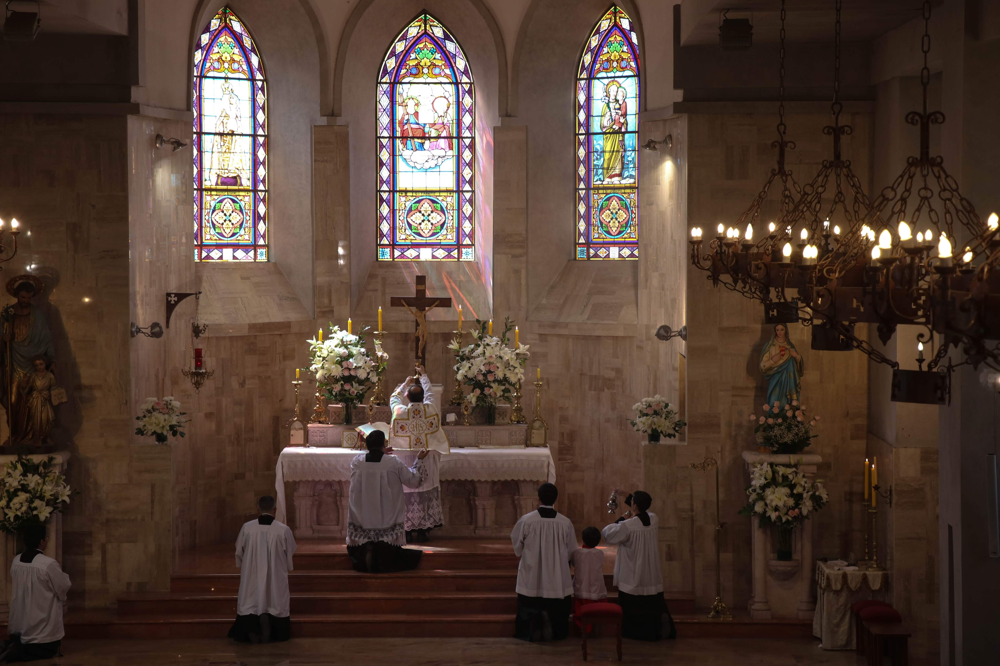
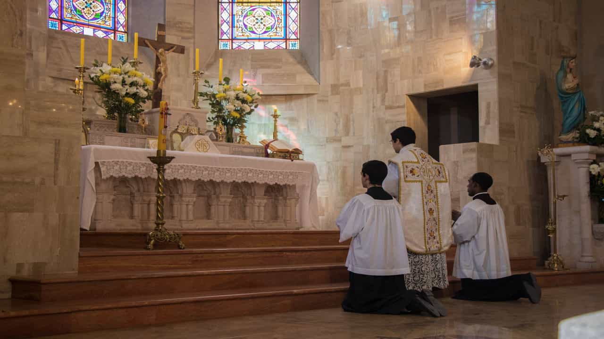

No necesitas saber latín
Puedes escuchar, rezar y observar con tranquilidad.

Puedes asistir sin saber latín ni conocer las ceremonias. Aquí encontrarás los horarios, la dirección y algunas indicaciones sobre la Misa.
Horarios y cómo llegarPuedes escuchar, rezar y observar con tranquilidad.
Para sentarte o ponerte de pie, puedes seguir a los demás.
Durante todas las Misas del Priorato.
Puedes venir solo, con amigos o en familia. Eres bienvenido.
Talavera de la Reina 430,
Las Condes, Santiago.
Hay estacionamiento con cupos limitados: lunes a viernes para la Misa de las 19:00, sábado a las 12:00 y domingo en todas las Misas. También puedes estacionar en las calles cercanas, donde esté permitido.
Hay confesiones durante todas las Misas.
Los horarios pueden cambiar. Consulta el calendario semanal.
Ver el calendario de esta semana
Oraciones en latín, predicación en español y momentos de silencio para encontrarte con Dios.
En la rezada predomina el silencio. En la cantada, el canto acompaña la oración. Puedes venir a cualquiera de las dos.
Se recibe de rodillas en el comulgatorio y en la boca. Para comulgar hay que ser católico y estar en estado de gracia. Si no comulgas, puedes quedarte rezando en tu banco.
Cómo prepararte y recibirlaNo hace falta seguir cada palabra. Silencia el teléfono al entrar y date tiempo para escuchar, observar y rezar.
Ven con ropa sobria y apropiada para la iglesia. No hace falta vestir de gala; basta con sencillez y respeto.
En la entrada hay velos disponibles para las mujeres que no traigan el suyo.
Hay estacionamiento en la iglesia, con cupos limitados. Abre para la Misa de las 19:00 de lunes a viernes, la de las 12:00 del sábado y todas las Misas del domingo. También puedes estacionar en las calles cercanas, respetando la señalización.
Sí, los niños son bienvenidos. Si necesitan salir un momento, puedes acompañarlos y volver con tranquilidad.
No necesitas aprender las respuestas. Puedes guiarte por los demás y rezar en silencio. Si no puedes arrodillarte o estar de pie, puedes permanecer sentado.
No es necesario. Un misal con traducción puede ayudarte, pero en tu primera visita basta con observar las ceremonias, escuchar y rezar.
Sí, eres bienvenido a asistir y conocer la Misa. Durante la Comunión, permanece en tu banco; al terminar puedes conversar con el sacerdote.
Para comulgar debes ser católico, estar preparado para recibir este sacramento y estar en estado de gracia: sin pecado mortal pendiente de confesión. Guarda al menos una hora de ayuno antes de comulgar; el agua y las medicinas no lo rompen. Hay excepciones para mayores, enfermos y quienes los cuidan. Si tienes dudas, habla con el sacerdote.
Acércate al comulgatorio —la baranda con reclinatorio delante del altar— y arrodíllate en un lugar libre. Se recibe en la boca, sin responder «Amén». Si no puedes arrodillarte, conversa antes con el sacerdote. Si no vas a comulgar, puedes quedarte rezando en tu banco.
Sí, durante todas las Misas. Si hace tiempo que no te confiesas o no recuerdas cómo hacerlo, díselo al sacerdote: él te ayudará.
Porque sacerdote y fieles se dirigen juntos a Dios. Las oraciones litúrgicas son en latín y la predicación es en español.
Puedes venir a cualquiera. El domingo a las 11:00 hay Misa cantada; si prefieres una celebración más silenciosa, las de las 9:00 y las 19:00 son rezadas. Revisa el calendario antes de salir.
De lunes a viernes, la iglesia permanece abierta desde el rezo de Prima, por la mañana, hasta después de la Misa de las 19:00. Puedes entrar a rezar en la iglesia o en la gruta en cualquier momento de ese horario.
Consulta los horarios de esta semana ¿Te queda alguna duda? Contáctanos